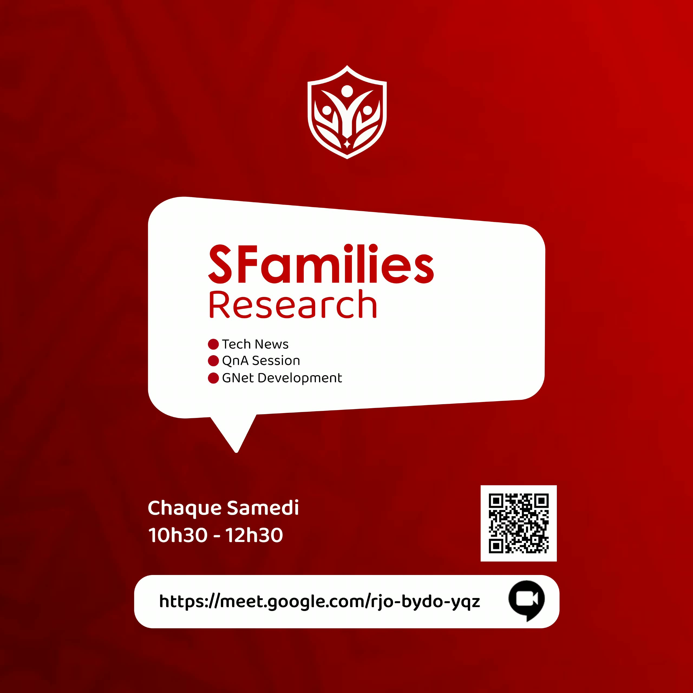

Chaque Mercredi · 20h00 - 22h00
SFamilies Bible study
- Bible Study
- QnA Session
- Daily Life Discussion
Sous la protection du bouclier de nos valeurs, nous unissons l'humain, l'étudiant et la communauté pour grandir dans le savoir et bâtir un avenir commun.
Née au cœur de l'Université Don Bosco de Lubumbashi et ouverte à la dynamique interuniversitaire, Student Family rassemble des étudiants passionnés de science et attachés à Jésus-Christ.
Le livre ouvert au centre traduit notre vision commune et notre engagement à apprendre ensemble et à croître, tandis que chaque étudiant occupe une place centrale au sein de la communauté.
Nous refusons la séparation entre la foi, l'intégrité et l'exigence scientifique : chaque compétence développée vise l'utilité concrète, la rigueur et l'élévation collective.
L'étoile placée à la base du bouclier rappelle notre cap commun : avancer ensemble vers un avenir brillant, porté par la solidarité, le travail et l'excellence.
Déploiement d'une infrastructure réseau et de maillage solidaire pensée pour faciliter l'accès aux ressources éducatives et spirituelles sur le campus et en RD Congo.
Conception d'applications et de composants logiciels adaptés aux réalités locales, à des conditions de connectivité variées et aux besoins des organisations.
Montée en compétences pratique sur les infrastructures, les systèmes, l'audit de sécurité, les simulations et la culture des clubs techniques.
Exploration de modèles et d'analyses appliquées aux réalités régionales, accompagnée d'un podcast stratégique pour valoriser les talents, la recherche et l'innovation.
Temps forts de la communauté : Innovation Day, démonstrations de prototypes et programmes d'accompagnement par cohorte.
Auto-apprentissage, anglais technique, bases systèmes et réseaux, logique de code, méthodes agiles, documentation et immersion dans son rôle.
Conception, APIs, workflows collaboratifs, preuves de concept, sécurité offensive et défensive, audits croisés et livraison du MVP.
Fondations IA, agents et automatisation, électronique, matériel, IoT et fusion logiciel-matériel jusqu'aux démonstrations de projets.
Mathématiques et calcul quantique, état de l'art, expérimentation rigoureuse, revue technique et rédaction d'articles scientifiques.

Construire quelque chose de nouveau, pour un futur qui rend gloire à Dieu.
Étudiants, développeurs, chercheurs, mentors et partenaires qui souhaitent bâtir ensemble sont les bienvenus.
Lubumbashi, RD Congo
Nathan Bangwa
Community Advocate · Auteur du manifeste
Franck Kimpinde
Master en Communication Numérique · Co-auteur du Manifeste